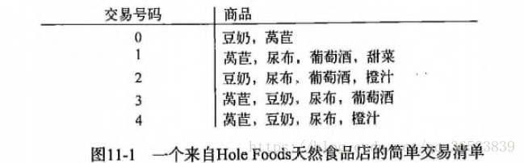
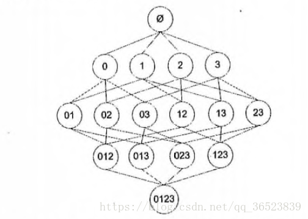
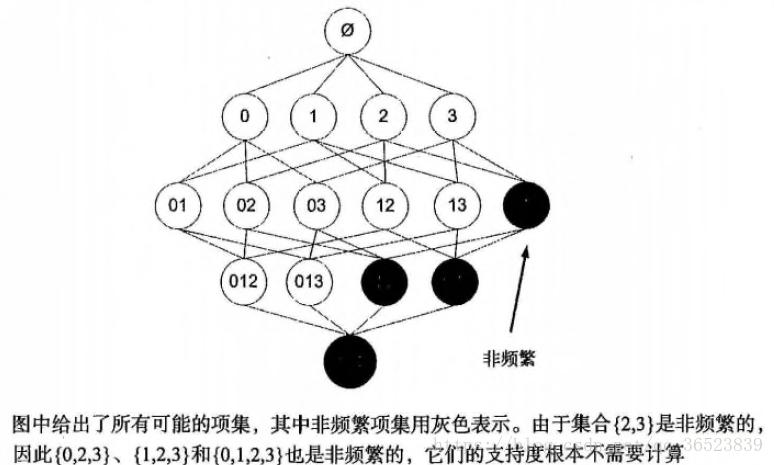
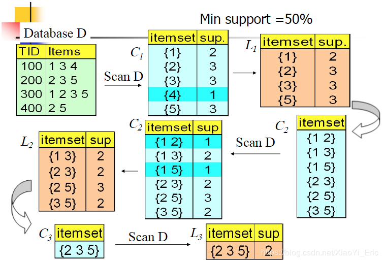
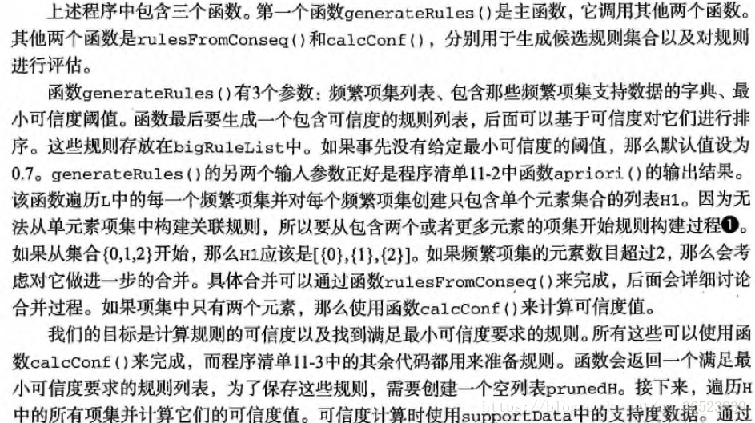
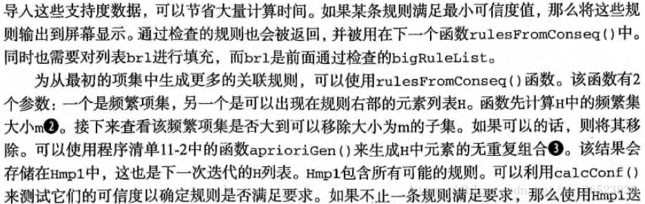
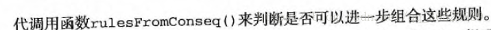

Data mining-Aporiori
文章目录
无监督学习算法 Apriori 数据挖掘
一、引文
主要参考文献：
- 《机器学习实战》：第十章 无监督学习
- Apriori
- 《数据挖掘：概念与技术第三版》
在无监督学习中，类似分类和回归中的目标变量事先并不存在。与前面“对于输入数据X能预测变量Y”不同的是，这里要回答的问题是：“从数据X中能发现什么？”在一堆数据集中寻找数据之间的某种关联，这里主要介绍的是叫做Apriori的一个‘先验算法’，通过改算法我们可以对数据集做关联分析——在大规模的数据中寻找有趣关系的任务，本文主要介绍使用 Apriori算法发现数据集的频繁项集、关联规则,以及对于Apriori算法的一些调参方法。
这些关系可以有两种形式：频繁项集、关联规则
- 频繁项集：经常出现在一块的物品的集合
- 关联规则：暗示两种物品之间可能存在很强的关系

频繁项集是指那些经常出现在一起的物品，例如上图的（葡萄酒、尿布、豆奶），从上面的数据集中也可以找到尿布->葡萄酒的关联规则，这意味着有人买了尿布，那很可能也会购买葡萄酒，那如何定义和表示频繁项集和关联规则呢？这里引入支持度和可信度（置信度）。
1.0 事务数据集及一些基本概念
- 事务：每一条交易称为一个事务
- 事务数据集：设 $I={i_1,i_2,…,i_m}$是一个全局项的集合,事务数据库$D={t_1,t_2,…,t_n}$是一个事务的集合,每个事务$t_i(1\leq i \leq n)$都对应 I 上的一个子集,例如 $t_1 = {i_1,i_3,i_7}$.
- 项：交易的每一个物品称为一个项，例如豆奶、尿布等
- 项集：包含零个或多个
1.1 支持度 support
一个项集得支持度被定义为数据集中包含该项集得记录所占的比例，上图中，豆奶的支持度为4/5，（豆奶、尿布）为3/5，支持度是针对项集来说的，因此可以定义一个最小支持度，只保留最小支持度的项集。
1.2 可信度（置信度） confidence
置信度表示Y 数据出现后,X数据出现的可能性,也可以说是数据的条件概率.
针对如{尿布}->{葡萄酒}这样的关联规则来定义的。计算为 支持度{尿布，葡萄酒}/支持度{尿布}，其中{尿布，葡萄酒}的支持度为3/5，{尿布}的支持度为4/5，所以“尿布->葡萄酒”的可行度为3/4=0.75，这意味着尿布的记录中，我们的规则有75%都适用。
有了可以量化的计算方式，我们却还不能立刻运算，这是因为如果我们直接运算所有的数据，运算量极其的大，很难实现，这里说明一下，假设我们只有4种商品：商品0，商品1，商品2，商品3，那么如何得到可能被一起购买的商品的组合？

上图显示了物品之间所有可能的组合，从上往下一个集合是 Ø，表示不包含任何物品的空集，物品集合之间的连线表明两个或者更多集合可以组合形成一个更大的集合。我们的目标是找到经常在一起购买的物品集合。这里使用集合的支持度来度量其出现的频率。一个集合出现的支持度是指有多少比例的交易记录包含该集合。例如，对于上图，要计算 0,3 的支持度，直接的想法是遍历每条记录，统计包含有 0 和 3 的记录的数量，使用该数量除以总记录数，就可以得到支持度。而这只是针对单个集合 0,3. 要获得每种可能集合的支持度就需要多次重复上述过程。对于上图，虽然仅有4中物品，也需要遍历数据15次。随着物品数目的增加，遍历次数会急剧增加，对于包含 N 种物品的数据集共有 2^N−1 种项集组合。为了降低计算时间，研究人员发现了 Apriori 原理，可以帮我们减少感兴趣的频繁项集的数目。
1.3 提升度
提升度体现 X和 Y之间的关联关系,提升度大于1表示X和Y之间具有强关联关系,提升度小于等于1表示X和Y之间无有效的强关联关系.
1.4 强关联规则
满足最小支持度和最小置信度的关联规则
1.5 原理
关联规则的挖掘目标是找出所有的频繁项集和根据频繁项集产生强关联规则.对于Apriori算法来说,其目标是找出所有的频繁项集,因此对于数据集合中的频繁数据集,我们需要自定义评估标准来找出频繁项集,常用的评估标准就是上述介绍的支持度.
Apriori算法是经典生成关联规则的频繁项集挖掘算法,其目标是找到最多的K项频繁集,那么什么是最多的K项频繁集呢?例如当我们找到符合支持度的频繁集AB和ABE,我们会选择3项频繁集ABE.下面我们介绍Apriori算法选择频繁K项集过程.
如果某个项集是频繁项集，那么它所有的子集也是频繁的，即如果{0，1}是频繁，那么{0}，{1}也一定是频繁的。这个原理直观上没有什么用，但是反过来看就很有用了，也就是说如果一个项集是非平频繁的，那么它的所有超集也是非频繁的。

Apriori算法采用迭代的方法，先搜索出候选1项集以及对应的支持度，剪枝去掉低于支持度的候选1项集，得到频繁1项集。然后对剩下的频繁1项集进行连接，得到候选2项集，筛选去掉低于支持度的候选2项集，得到频繁2项集。如此迭代下去，直到无法找到频繁k+1集为止，对应的频繁k项集的集合便是算法的输出结果。我们可以通过下面例子来看到具体迭代过程。

数据集包含4条记录{‘134’,‘235’,‘1235’,‘25’}，我们利用Apriori算法来寻找频繁k项集，最小支持度设置为50%。首先生成候选1项集，共包含五个数据{‘1’,‘2’,‘3’,‘4’,‘5’}，计算5个数据的支持度，然后对低于支持度的数据进行剪枝。其中数据{4}支持度为25%，低于最小支持度，进行剪枝处理，最终频繁1项集为{‘1’,‘2’,‘3’,‘5’}。根据频繁1项集连接得到候选2项集{‘12’,‘13’,‘15’,‘23’,‘25’,‘35’}，其中数据{‘12’,‘15’}低于最低支持度，进行剪枝处理，得到频繁2项集为{‘13’,‘23’,‘25’,‘35’}。如此迭代下去，最终能够得到频繁3项集{‘235’}，由于数据无法再进行连接，算法至此结束。
二、频繁项集
主要步骤：
- 生成所有单个物品的项集列表
- 扫描交易记录来查看哪些项集满足最小支持度要求，那些不满足最小支持度的集合会被去掉
- 对剩下的集合进行组合以生成包含两个元素的项集
- 接下来重新扫描交易记录，去掉不满足最小支持度的项集，重复进行直到所有项集都被去掉
1 | """ |
返回频繁项集与支持度
1 | [[frozenset({'I6'}), frozenset({'I5'}), frozenset({'I4'}), frozenset({'I3'}), frozenset({'I2'}), frozenset({'I1'})], [frozenset({'I4', 'I3'}), frozenset({'I3', 'I5'}), frozenset({'I4', 'I1'}), frozenset({'I5', 'I1'}), frozenset({'I4', 'I5'}), frozenset({'I3', 'I1'}), frozenset({'I3', 'I2'})], [frozenset({'I4', 'I3', 'I5'}), frozenset({'I4', 'I5', 'I1'})], []] |
上面代码获取数据的频繁项集,下面通过其他函数来获得关联规则
三、关联规则
1 | # 获取关联规则的封装函数 |
返回关联规则:
1 | =====关联规则===== |
以上便是引用作者对这三个函数的详细描述，在函数中的具体代码，我也有相关的注释，慢慢来应该能够理解的。



四、算法流程
从Apriori算法原理中我们能够总结如下算法流程，其中输入数据为数据集合D和最小支持度α，输出数据为最大的频繁K项集。
- 扫描数据集，得到所有出现过的数据，作为候补1项集
- 挖掘频繁K项集
a. 扫描计算候选K项集的支持度
b. 剪枝去掉候选K项集中支持度低于最小支持度α的数据及，得到频繁K项集，如果频繁K项集为空，则返回频繁K-1项集的集合作为算法结果，算法结束。如果得到的频繁K项集只有一项，则直接返回频繁K项集的集合作为算法结果，算法结束。
c. 基于频繁K项集，链接生成候选K+1项集 - 利用步骤2，迭代得到k=k+1项集结果。
五、优缺点
5.1 优点
- 适合稀疏数据集
- 算法原理简单，易于实现
- 适合事务数据库的关联规则挖掘
5.2 缺点
- 可能产生庞大的候选集
- 算法需多次遍历数据集，算法效率低，耗时